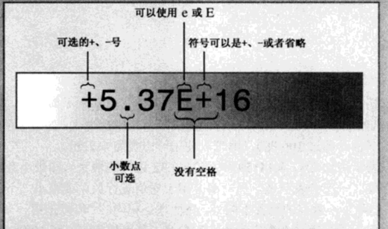

变量：可以用来存储数据。
变量命名规则：
名称只能使用字母
第一个字符不能是数字
不能是C++关键字
区分大小写
C++对变量名长度无限制，但是运行平台可能有限制
变量命名规范
变量声明方式：<变量类型> 变量名;
变量类型和范围：
|
类型 |
类型 |
位 |
范围（2^(字节数*8)） |
|
字符 |
char |
1 个字节 |
-128 到 127 或者 0 到 255 |
|
无符号字符 |
unsigned char |
1 个字节 |
0 到 255 |
|
整型 |
int |
4 个字节 |
-2147483648 到 2147483647 |
|
无符号整型 |
unsigned int |
4 个字节 |
0 到 4294967295 |
|
短整型 |
short int |
2 个字节 |
-32768 到 32767 |
|
无符号短整型 |
unsigned short int |
2 个字节 |
0 到 65,535 |
|
长整型 |
long int |
8 个字节 |
-2^(64-1) 到 2^(64-1) |
|
无符号长整型 |
unsigned long int |
8 个字节 |
0 to 2^64 |
|
浮点型 |
float |
4 个字节 |
+/- 3.4e +/- 38 (~7 个数字) |
|
双浮点型 |
double |
8 个字节 |
+/- 1.7e +/- 308 (~15 个数字) |
|
长浮点 |
long double |
16 个字节 |
+/- 1.7e +/- 308 (~15 个数字) |
|
宽字符 |
wchar_t |
2 或 4 个字节 |
1 个宽字符 |
特殊运算符和头文件limits
Sizeof(变量类型) 能够计算出该类型有多少字节
Limits头文件存储了该类型所能存储的最大值
整数字面值（用几进制表示）
数字10可以书写为
10(默认)：十进制
0xA:十六进制
012:八进制
0b1010:二进制
英文字符存储：char中字符依照ASCII码字符编码后存储
如：‘A’为65，’B’为66
特殊字符存储:对于换行符等特殊字符，采用转义字符存储，如换行存储为’\n’
通用字符集：unicode提供了一种表示各种字符集的解决方案，能够表示各国语言。
const限定符：表示常量（不可修改），例const int pai=3.14;
浮点数(float\double\long double)：
书写方式有两种，一种是小数方式书写，一种是科学计数法书写，科学计数法格式如下：

浮点数输出：
cout函数默认输出浮点数最多输出小数点后6位。
如1/3会输出0.333333 10000000000000000/3 = 1.333333E15
浮点数优缺点：
有点可以表示小数，利用科学记数法可以表示数的范围很大
缺点：运算速度慢，精度低
算术运算符
|
运算符 |
描述 |
实例（A=10,B=20） |
|
+ |
把两个操作数相加 |
A + B 将得到 30 |
|
- |
从第一个操作数中减去第二个操作数 |
A - B 将得到 -10 |
|
* |
把两个操作数相乘 |
A * B 将得到 200 |
|
/ |
分子除以分母，所得精度以分子分母最高精度为准 |
B / A 将得到 2 |
|
% |
取模运算符，整除后的余数 |
B % A 将得到 0 |
|
++ |
自增运算符，整数值增加 1 |
A++ 将得到 11 |
|
-- |
自减运算符，整数值减少 1 |
A-- 将得到 9 |
此外，C++运算符可以重载，如<<既是左移运算符，又在cout函数中重载为其他功能。
类型转换：
实现方式如
Int a=1.1;
Int a=(int)1.1;
Int a=int(1.1);
注：
Double转换成float，long转成int，超出范围结果不确定。
Float转换成int，小数部分丢失
表达式将会有类型提升，表达式结果会以变量较高较高精度为准。如2/1=2; 2.0/1=2.0; 2/1.0=2.0;
Auto声明（C++11新增）
Auto声明编译器自动推断变量类型.
例如：auto n = 100;//n is int
auto x = 1.5; // x is double
Auto在日常使用较少，在处理标准模块库（STL），优势会显现出来。